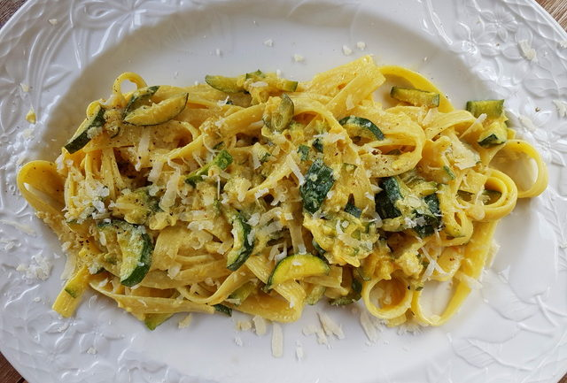

Zucchini and Saffron Tagliatelle
Or any other favourite pasta for that matter.

A true village staple, this basic pasta truly captures the essence of Italian cooking: simple yet high quality
ingredients combine to produce outstanding results.
Ingredients - these should be as fresh as possible
- chosen high quality dried or fresh pasta
- 1 zucchin (courgette) grated coursely
- 1 onion, finely diced
- 1 clove garlic, finely sliced
- Few strands of saffron
- 1 cup high quality vegetable stock (dado classico or similar)
- salt and pepper to taste
- grated hard cheese, Parmigiano Reggiano or similar
Method
- Warm EVOO in heavy bottomed skillet or similar on low heat, add garlic and gently caramelise
- Fill pasta pot with water and bring to rolling boil
- Salt the pasta water to taste
- Add onion to skillet and soften untill sticky and golden
- Cook the pasta to al dente, reserving a cup of pasta water
- Add zucchini to skillet and cook down, adding vegetable stock as it cooks to ensure it doesnt dry out
- Add the saffron to the skillet with stock
- When the zucchini is soft and sticky, add the drained pasta to the skillet
- FInish with pasta water to emulsify and bring to desired consistency
- Finally, season with salt and pepper to desired taste